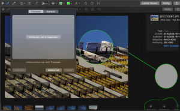

MacOS Mojave - 3 tolle neue Funktionen
Seit Ende September gibt es ja eine neue Version das Betriebssystems für Macs: Mojave. Die Versionsnummer lautet 10.14. Nachdem mich die letzten Updates vom Funktionsumfang nicht so sehr überrascht haben, gibt es diesmal ein paar Features, die mir wirklich gut gefallen. Und drei dieser Funktionen, bei denen ich mich auch frage: Warum erst jetzt?, möchte ich hier mal
1. Eine bessere Screenshot-Funktion
Apple hat wohl erkannt, dass die Nutzer ab und zu doch mal Screenshots anlegen müssen. Zwar gab es dafür schon eine ganze Weile Shortcuts (wie z.B. Umschalttaste - Apfel - 4). Aber insgesamt gingt die Funktion etwas unter: sie war ohne richtiges Interface nur umständlich zu bedienen und - naja - die Tastenkombination musste man sich ja auch irgendwie merken. Das ändert sich mit Mojave. Zwar gibt es nun einen weiteren Shortcut (Umschalttaste - Apfel - 5) den man sich merken muss. Aber Apple hat das ganze auch in eine App gegossen, die man mit der Suche nun viel einfacher öffnen kann. Mit der App kann man außerdem nicht nur Bilder aufnehmen, sondern auch Videos und diese an beliebigen Orten speichern.
2. Bilder markieren
Im Finder wurde die Vorschau-Darstellung optimiert. Der Fächer wurde abgelöst, stattdessen sieht man nur das jeweils ausgewählte Objekt in einer größeren Vorschau. Das ist aber noch nicht die spannende Neuerung. Es gibt nun eine App für die schnelle Bearbeitung von Bildern und PDF-Dokumenten, die viele Aufgaben sehr erleichtern wird. Dateien lassen sich mit Texten, den typischen geometrischen Formen oder Freihandzeichnungen versehen. Die Freihandzeichnungen werden vom Programm sogar analysiert und man kann diese dann ihn geometrische Objekte umwandeln, die der Zeichnung am ähnlichsten sind.
[caption id=“attachment_2233” align=“aligncenter” width=“300”] 
{kind=link}
Außerdem kann man z.B. die Unterschrift sehr einfach über das Trackpad aufzeichnen, ohne es dauerhaft zu “klicken”. Die App aktiviert dazu einen Unterschriften-Modus und erfasst dann jede Berührung des Trackpads.
Weiterhin gibt es zwei Funktionen zum Hervorheben von Bereichen. Eines davon ist ein Kreis, der den Bereich vergrößert, den er überdeckt. Das andere ist ein Rechteck, dass den außenliegenden Bereich etwas abblendet.
3. Der dunkle Modus
Endlich gibt es einen dunklen Darstellungsmodus. Soviel muss man dazu gar nicht sagen, außer, dass es sehr angenehm ist. Sicherlich ist das Geschmackssache, für mich ist ein dunkles Template bei allen genutzten Apps aber immer die erste Wahl.